Sampah,
Jaga Bumi dengan Prinsip 3R
Kurangi sampah, gunakan kembali, dan daur ulang. Langkah kecil kita hari ini adalah investasi untuk bumi di masa depan!. Proyek ini menggabungkan pembelajaran lintas mata dengan metode waterfall.
Mulai Belajar.png)
Kurangi sampah, gunakan kembali, dan daur ulang. Langkah kecil kita hari ini adalah investasi untuk bumi di masa depan!. Proyek ini menggabungkan pembelajaran lintas mata dengan metode waterfall.
Mulai Belajar
3R adalah cara mengelola sampah dengan mengurangi penggunaan barang yang menghasilkan sampah, menggunakan kembali barang yang masih bisa dipakai, dan mendaur ulang sampah menjadi barang yang bermanfaat. Tujuannya agar sampah tidak menumpuk dan lingkungan tetap bersih.
Mengurangi penggunaan barang yang menghasilkan sampah.
Menggunakan kembali barang yang masih layak digunakan.
Mendaur ulang sampah menjadi barang baru yang bermanfaat.
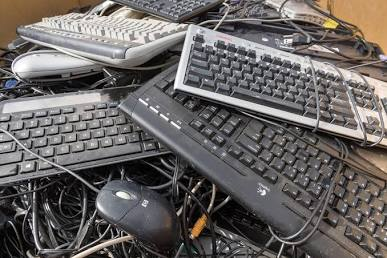
Pengolahan keyboard bekas menjadi jam merupakan salah satu bentuk pemanfaatan sampah elektronik. Kegiatan ini mengajarkan kita untuk mengubah barang yang tidak terpakai menjadi benda yang memiliki nilai guna.
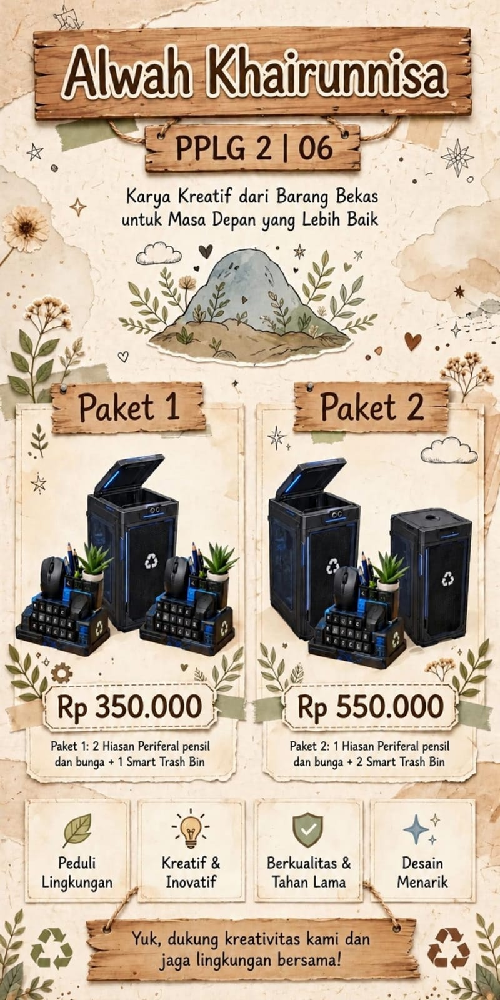
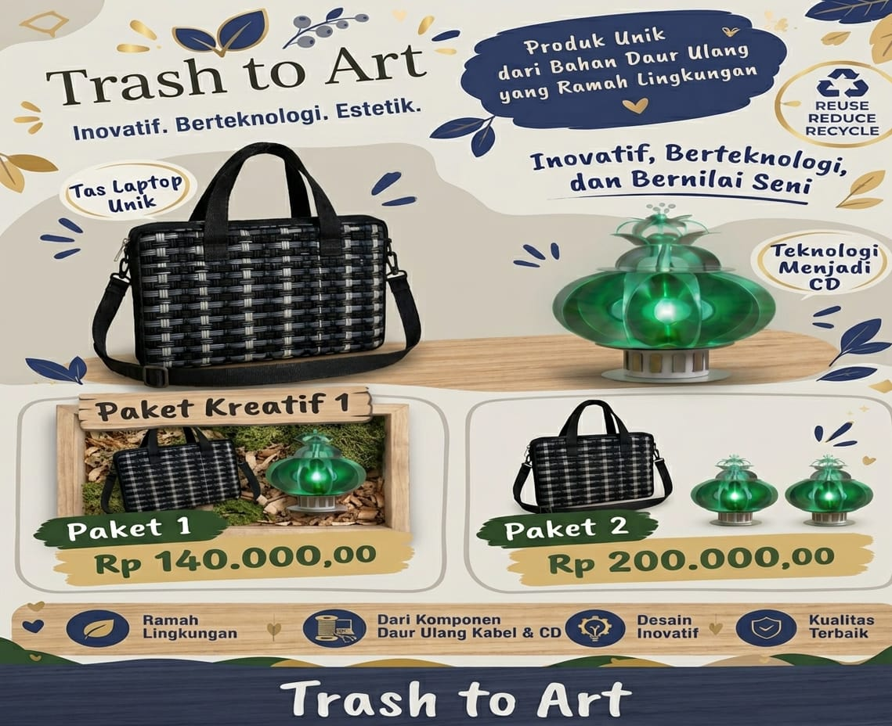
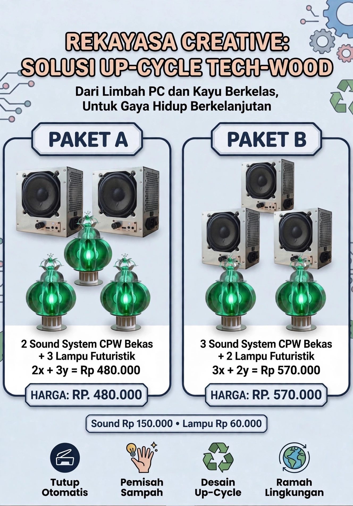
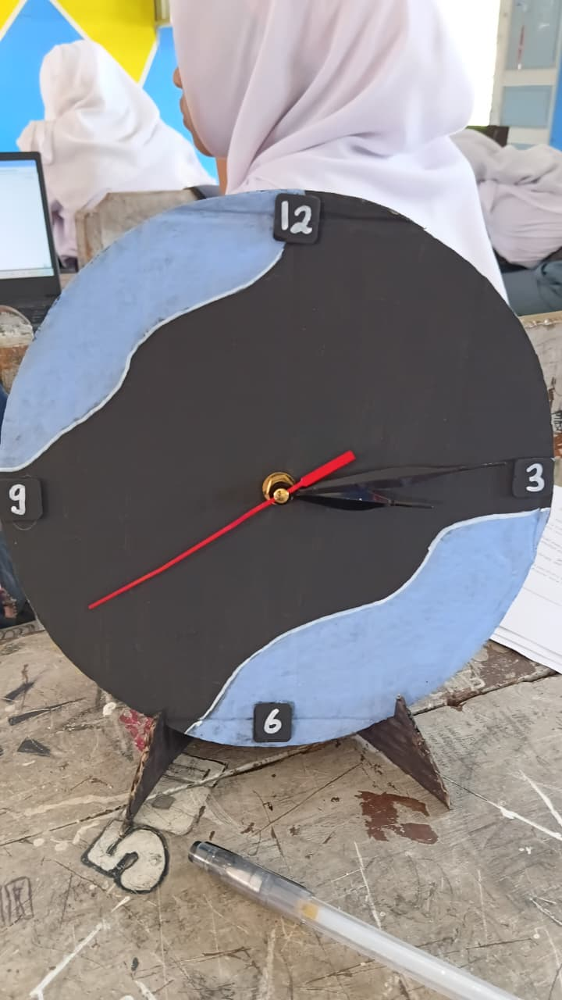
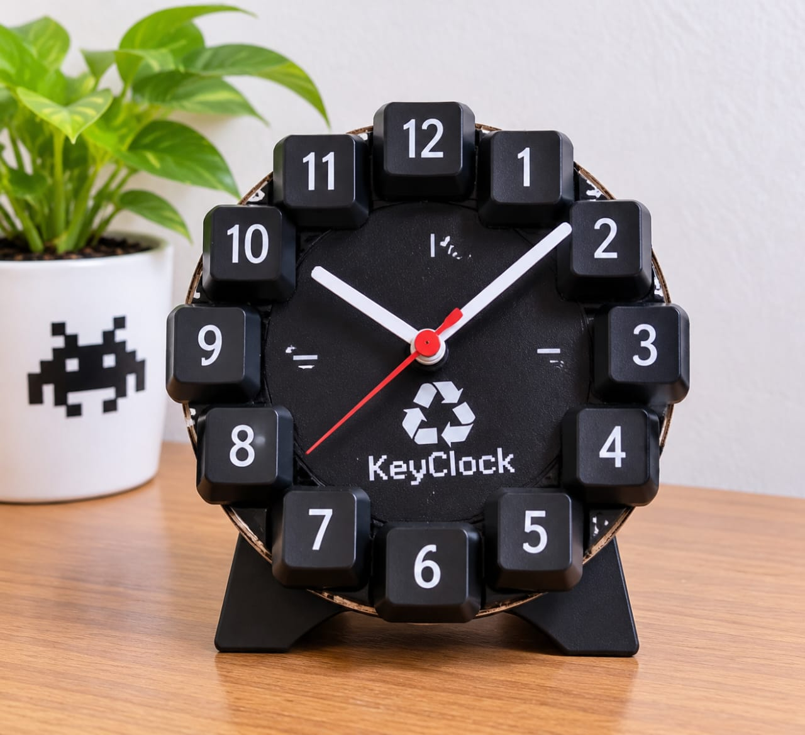
Memanfaatkan keyboard bekas menjadi jam yang bermanfaat.
KeyClock merupakan kerajinan berupa jam yang dibuat dari tombol keyboard bekas. Produk ini memanfaatkan limbah elektronik menjadi barang yang fungsional dan memiliki nilai estetika. Pembuatan KeyClock menerapkan prinsip reuse dan recycle untuk mengurangi limbah serta meningkatkan kreativitas.
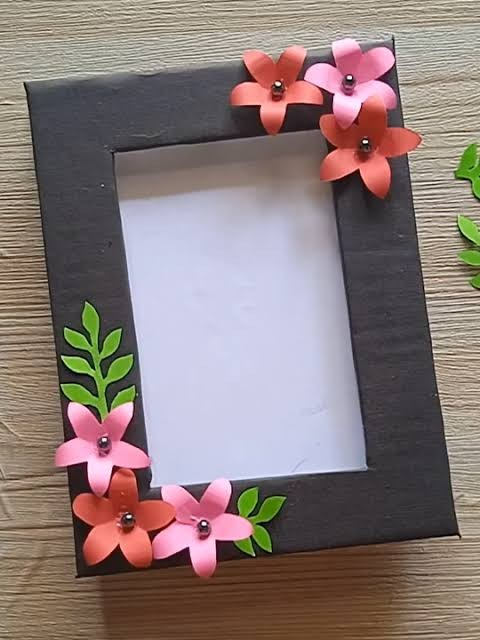
Karya seni dari kardus yang dibuat menjadi bingkai foto.
Bingkai foto dari kardus bekas merupakan produk kerajinan yang dibuat dengan memanfaatkan kardus yang sudah tidak digunakan. Kardus dipotong dan dibentuk menjadi bingkai untuk memajang foto. Produk ini dapat dihias menggunakan kertas warna, kain perca, atau bahan dekoratif lainnya.
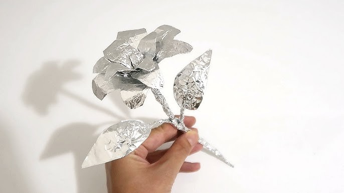
Kreasi bunga hias dari alumunium dengan sentuhan kreativitas.
Hiasan bunga dari kaleng aluminium bekas merupakan produk kerajinan yang dibuat dengan memanfaatkan kaleng minuman yang sudah tidak digunakan. Kaleng dibentuk menjadi kelopak bunga, kemudian disusun menjadi hiasan dekoratif.
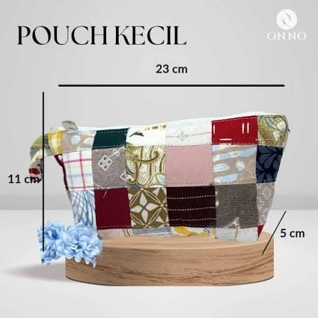
Memanfaatkan sampah kain perca menjadi dompet.
Dompet dari kain perca merupakan produk kerajinan yang dibuat dengan memanfaatkan sisa potongan kain yang tidak terpakai. Produk ini dapat digunakan untuk menyimpan uang, kartu, atau benda kecil lainnya.
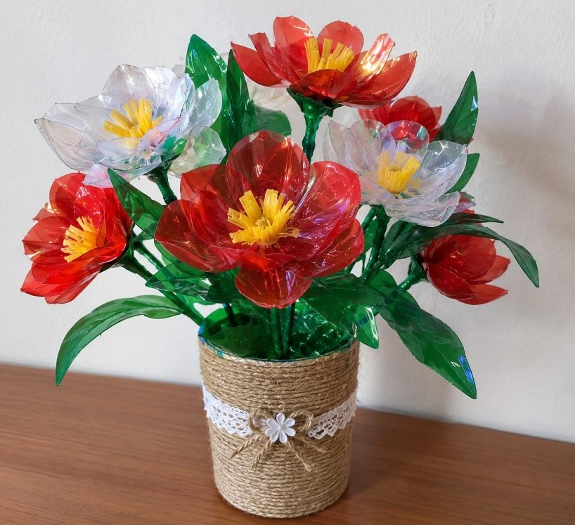
Memanfaatkan plastik bekas menjadi bunga hias.
Bunga hias dari plastik bekas merupakan kerajinan yang memanfaatkan plastik bekas kemasan atau kantong plastik yang bersih. Plastik dibentuk menyerupai kelopak bunga sehingga menghasilkan hiasan yang menarik.
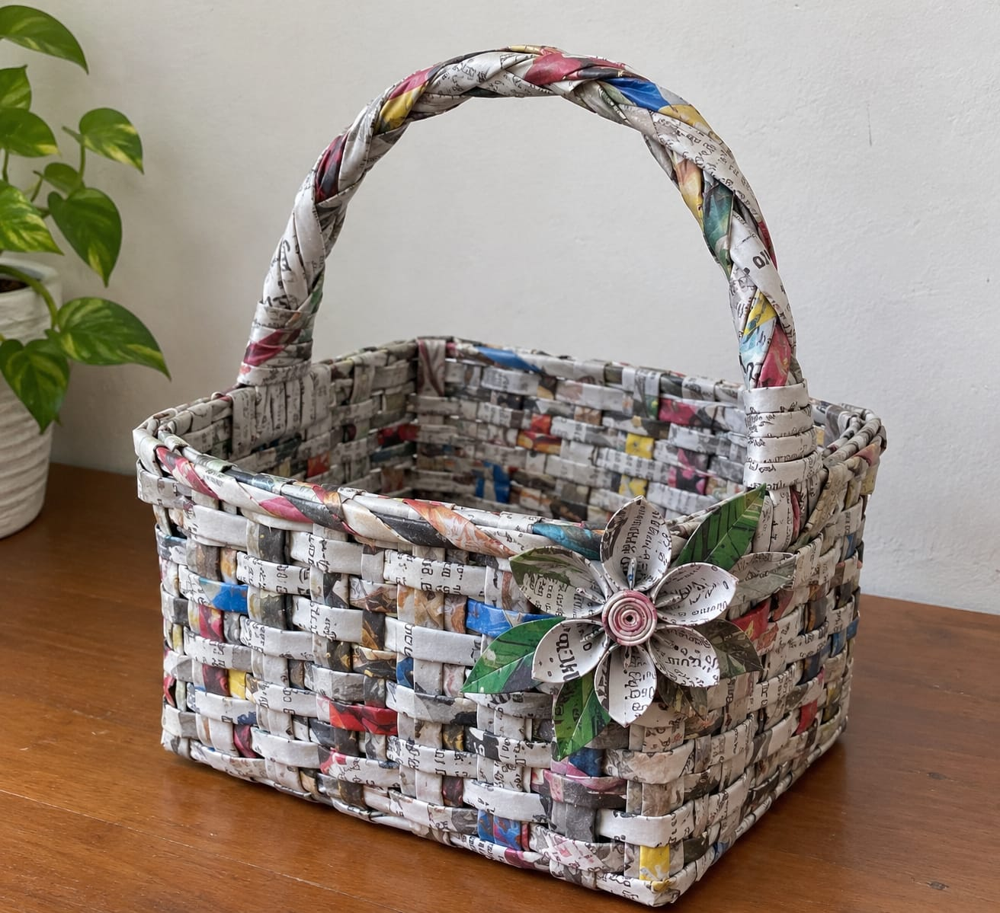
Memanfaatkan koran bekas menjadi keranjang.
Keranjang dari koran bekas merupakan kerajinan yang dibuat dengan menggulung dan menyusun kertas koran menjadi bentuk keranjang. Produk ini dapat digunakan untuk menyimpan alat tulis, aksesori, atau benda-benda ringan.
Punya pertanyaan, saran, atau masukan? Yuk, sampaikan pesanmu kepada kami!
SMKN Tengaran, Jawa Tengah
Email: Hubungi melalui sekolah
Website edukasi Sampahku Hartaku
Kami senang menerima pertanyaan dan pendapatmu.